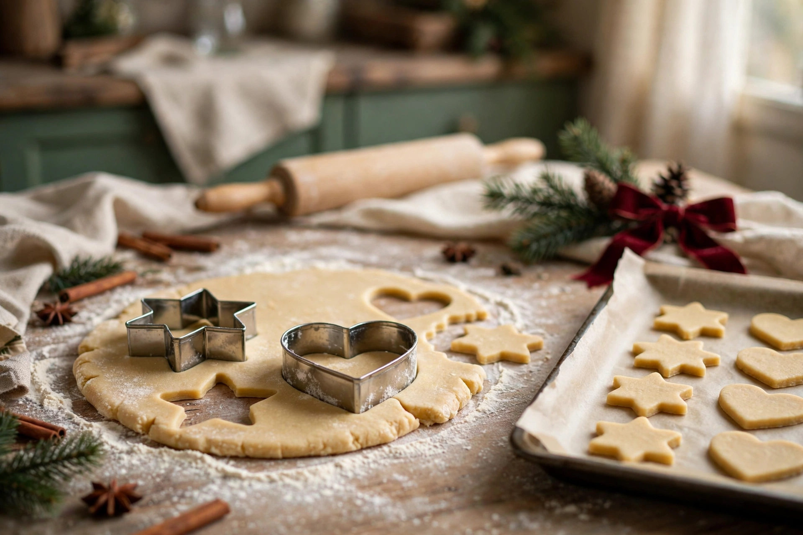

Butter Cookies for Cutting Out
This basic dough is the starting point for countless cookie creations: roll, cut, bake, decorate. It is simple, never fails, and tastes wonderful plain – or with icing and sprinkles.

Contents
Ingredients
Instructions
- Quickly knead all ingredients into a smooth dough, shape into a ball and chill for 1 hour.
- Roll out the dough on a floured surface to about ⅛ inch (4 mm) thick and cut out any shapes you like.
- Place the cookies on a parchment-lined baking sheet.
- Bake at 350°F (180°C) for 8–10 minutes, until the edges are just turning golden.
- Let cool, then decorate as you wish with icing, chocolate and sprinkles.

Tip
For even baking, keep all cookies on one sheet a similar size. The dough also freezes well – handy for a head start on the season.
📌 Find more cookie ideas on our Pinterest profile:
Cookie Recipes on Pinterest
Cookie Recipes on Pinterest